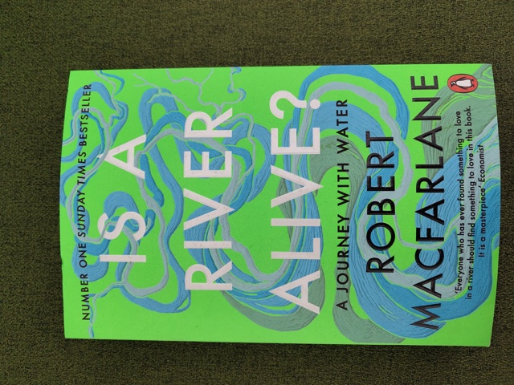
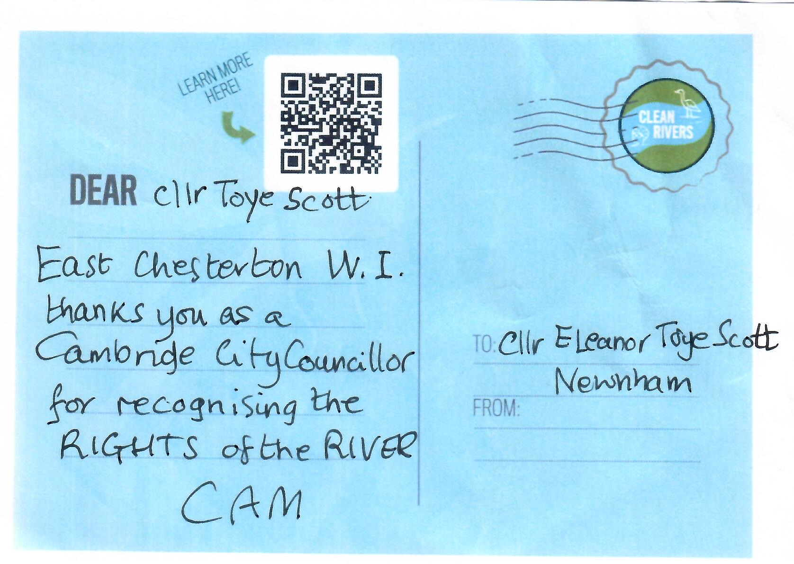

So the river has rights - so what?
Back in July, in collaboration with Green councillor colleagues, I drafted and submitted a motion to Full Council recognising the Rights of the River Cam. This wasn't my idea - my fellow Newnham councillor Jean Glasberg had proposed a very similar motion back in 2023, when there were very few Greens on the City Council, and it had not passed. But we felt that, now there were twelve Green councillors, it was time to have another go.
The idea of formally recognising the rights of natural features has gained popularity in recent years. I personally feel there's a nice symmetry about formally recognising natural features as having rights, given that so much damage to the environment is caused by companies, which themselves are recognised in law as "persons". There's some background on the origins and development of the rights-of-nature approach in local academic and author Robert Macfarlane's excellent book Is a River Alive? which I have been reading recently - and while we thought it might draw ridicule or controversy in the Council chamber, it was an idea we didn't have to defend at all during the debate.

In fact, one might say it was an idea whose time seemed to have come. Our motion was significantly amended by both Labour and the LibDems, and then finally they coalesced their separate amendments into one, which we accepted. There are inevitably some differences of opinion and perspective across the parties on the many complex issues which the welfare of the river touches on, and how these should be addressed. But despite this, I was delighted that, unlike its rejection in 2023, this time the motion passed unanimously.
But there's a big difference between agreeing in principle that the river has rights, and figuring out how to defend those rights in practice. On the one hand, there's general agreement that nature is important for human health and well-being, and everyone welcomes initiatives such as the Greater Cambridge Chalk Streams project, which has combined citizen science monitoring of water quality with practical conservation measures like replacing gravel in river beds and providing woody material along channel edges to narrow the stream and encourage faster flow.
But on the other hand, while this work improves the condition of our streams and increases our understanding of the kinds of pollution that the river is suffering from, it can't on its own address the biggest threats to the river's wellbeing and ours: pollution from agricultural run-off and sewage, and the reality of overabstraction, made worse by drought and by the pressures of development.
Most people know that, even before considering the impact of climate change, East Anglia is one of the driest areas of the UK. But something I hadn't fully appreciated until I started looking into the relationship between human water use and needs and the state of the rivers locally, is that Cambridge Water's supply comes predominantly from groundwater. Rainwater is stored naturally beneath our feet, in a chalk aquifer. The chalk underground functions like a sponge and the water occupies pores and cracks in the rock. The water in the aquifer feeds the local river system. And our drinking water comes from the chalk aquifer too - Cambridge Water drills boreholes and pumps groundwater up through them. So our chalk streams are in direct competition with our taps. The Environment Agency has warned that Cambridge Water is already abstracting groundwater at unsustainable levels.
Our chalk streams are therefore already under significant pressure. On top of that, the Cambridge area is seen by the Government as one of the nation's engines of economic growth, which means it is being prioritised for development - more homes, more offices, more labs, more university accommodation, more everything, and probably AI data centres too. Naturally, this all requires more water.
The situation is sufficiently serious that in 2023, the Government set up a Water Scarcity Group for the region to assess the situation and propose mitigations. In 2024, they provided an update on the region's water management strategy. There's a medium-term plan, firstly to make use of a temporary additional water supply from Grafham Water, which can be piped to Cambridge, and which is expected to be available from 2032 until around 2040; and secondly, to build a new Fens Reservoir near Chatteris, which will start supplying water to the area sometime from 2036 onwards. In the short-term, there is an ongoing retrofitting programme to update domestic plumbing in existing households to make them more water-efficient, estimated to save 32.5 litres per household per day.
However, so far, I have not been able to find any data on how much water the retrofitting programme is actually saving per household upgraded. And in the absence of that information, I am inclined to be sceptical that sufficient water can be saved to keep pace with the increasing demand for water from new developments. Initially, the Government proposed a water credit scheme to make developers pay to retrofit enough houses to offset the new demand created by their planned buildings - but this is no longer being actively pursued as an immediate solution.
Worryingly, though, the establishment of the Water Scarcity Group and the Government's proposal of the water credits scheme in 2024 has already given planners confidence to greenlight at least two major developments in the area. One of these was the University of Cambridge's expansion of its West Cambridge site, and the other was a new housing development near Cambridge North station.
Green politicians are often accused of being NIMBYs, and of being against all development on principle. So I'd like to say that I fully recognise the need for new housing. In an area where houses and rents are as expensive as they are here, in my view the only way to bring down the cost (which is a major contributor to Cambridge's economic inequality) is to significantly increase the supply.
But water availability is a hard physical constraint. We saw our rivers suffering from massive overgrowth of weeds and foliage this summer, because they contained less water than normal, flowing more slowly, and with a higher concentration of nitrates and phosphates from agriculture which encourage plant growth. That may have made less of an impression on many people than the hosepipe ban, and reports from some parts of the county of taps running dry. The bottom line is, you can't just keep building, assuming that the Government and the Water Scarcity Group are solving the problem so you don't need to address it. If we go on doing that, our rivers will dry up, and new homes without a reliable water supply will be no use to anyone.
So, I'm greatly encouraged that the City Council has recognised the rights of the River Cam - but we have no grounds for complacency. We're facing some very tough practical challenges. And while it may often seem that the needs of people and the needs of nature are in a zero-sum competition, we need to look for win-win outcomes. Ultimately, people are part of nature, and their needs must be recognised and accommodated alongside those of rivers, plants and wildlife - but at the same time, only solutions that work for nature can be genuinely adequate to address human needs.
